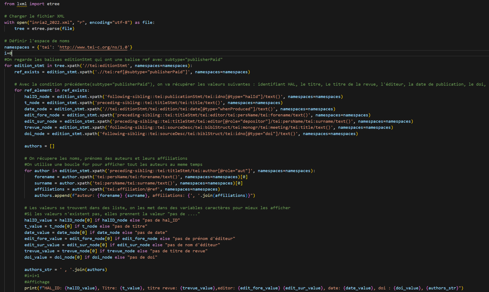

Dans le cadre professionnel, en octobre, je découvert deux nouvelles manières de faire de la fouille de données qui sont : les requêtes API et l’extraction de données dans des fichiers XML. Le pôle Acquisition numérique avait besoin de savoir si les publications qu’ils avaient achetées se trouvaient bien sur notre plateforme et avoir des informations supplémentaires pour négocier de futurs contrats avec des éditeurs. L’objectif était de récupérer des informations sur les publications qui contiennent la mention " : L’institution a financé les frais de publication pour que cet article soit en libre accès". Cette information ne peut pas se trouver avec une requête API, je dois donc faire un script python pour automatiser cette tâche. Je recherche donc toutes les informations importantes à récupérer selon la structure du fichier XML et je les formate pour les écrire dans la console python pour une lecture simplifiée. Dans ce projet, j’ai approfondi mes connaissances en XML et sa structure. J’ai également appris à respecter les contraintes que mes collègues pouvaient me donner pour le rendu final. Cette preuve montre une partie de mon code Python.
